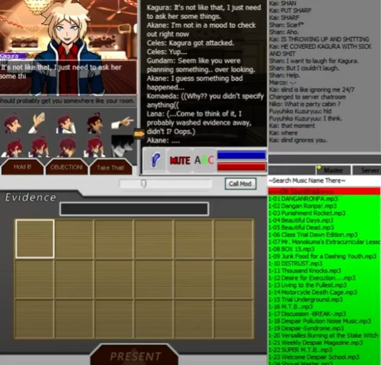
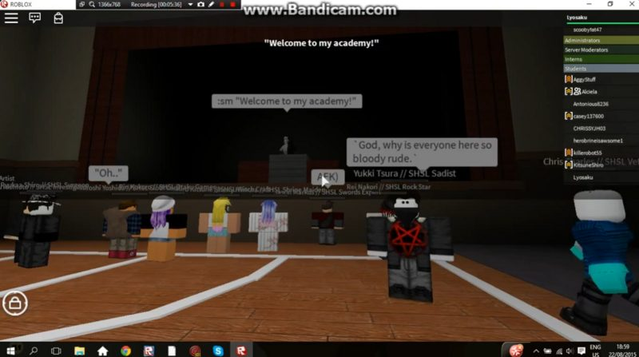
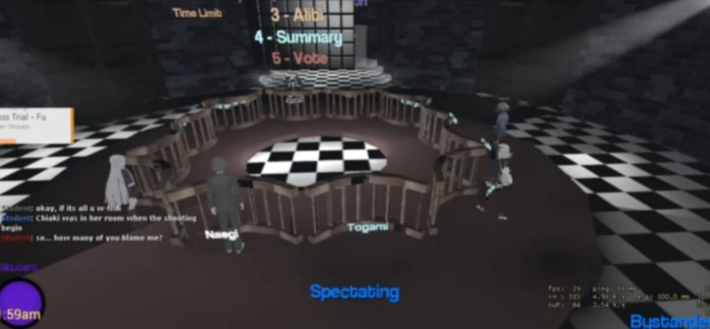
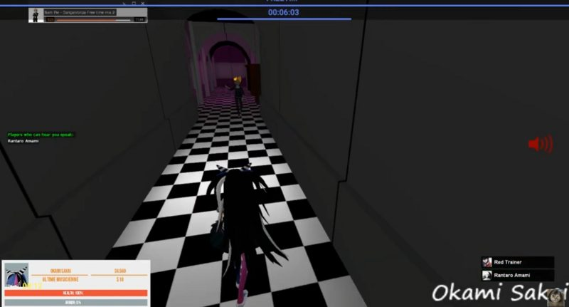
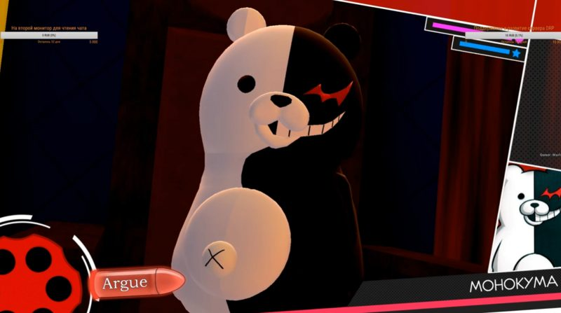
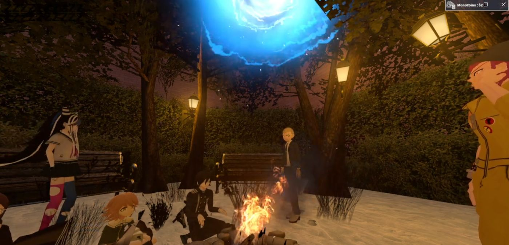

Histoire du serveur Danganronpa Re:Birth.
Le RP Danganronpa à commencer vers 2015, 1 ans après la sortie occidentale des deux premiers jeux. Les premiers RP était fait sur des Online comme Attorney ou Visual Novel Online. Les plus vieux RP étant américains (dès 2015) et polonais (dès 2016).



Les premiers RP français date de 2018 avec DanganronpaRP, c'est d'ailleurs à cette période que Danganronpa Online (Anglais) a été coder, étant très similaire à Attorney Online. Les premiers RP russes (en tout cas sur Gmod) sont arrivés début 2019 et avait déjà leur système de trial qu'ils ont toujours aujourd'hui. Il y a aussi des RP gmod anglais mais ils sont tous à l'écrit dans le chat.


Katsu a commencé le RP écrit fin 2017 sur un RP Naruto écrit sur discord. Voyant le potentiel que cela aurait mais détestant la façon de faire des staffs du serveur, il crée son propre serveur. Le succès de son serveur Naruto est instantané et dû en grande partie à "Tenshikari" qui ramène toute sa commu sur ce serveur. Une amitié s'est formé entre Katsu et Tenshi malgré les dramas successifs. Katsu a commencé à jouer à Danganronpa fin août 2021 sous les conseils de l'ancien staff Tenshikari. Il a d'abord joué aux deux premiers Danganronpa puis s'est spoilé Danganronpa V3 et Despair Girl par flemme d'y jouer. Il a par contre lu les lights novels Danganronpa Kirigiri et Danganronpa Togami. C'est seulement après avoir joué à Danganronpa 1 et 2 que Tenshikari donne le lien discord New World Order à Katsu. Katsu était impatient de jouer sa première saison, on était alors à une époque où NWO était inactif. Il est allé harceler pleins de gens en MP pour leur demander de bien vouloir s'inscrire à la prochaine saison. Ce qui a poussé également Tenshikari à faire une saison pour qu'il puisse découvrir le RP Danganronpa GMOD. Ce n'était pas la meilleure des saisons, mais suffisamment pour que Katsu y voit le potentiel d'amusement infini de ce jeu et relancer l'activité du serveur.
Katsu a rejoint NWO en fin d'année 2021. Il en est devenu staff en Mai 2023 et a été banni de ce dernier en Août 2023. Il aura fait deux saisons en tant que Monokuma mais aura été considéré comme trop toxique pour continuer l'aventure sur NWO. Après qu'il ait critiqué la saison 100, symbolique pour ceux l'ayant préparé, un ban a été appliqué par Oshin sans l'aval de personne. Il l'accusa de : "Leak des messages privés staff et autre. Comment faire confiance et aimer une personne qui avait des intentions malveillante. Peut être que pour toi c'est normal, mais pour moi quelqu'un qui se permet ce genre de chose c'est pas quelqu'un à qui j'ai envie de refaire confiance. + Tenshi t'en a parler, la manière dont tu as parlé de la saison 100 c'est pas PASSER du tout. Et ta manière d'être, trop dur à expliquer mais je pense qu'après de nombreuse discussion qu'on a eu tu peux le comprendre." Katsu a ensuite été unban de NWO le 28 Octobre 2023, mais pas pour longtemps...
Deux semaines après, Tenshi et Oshin annoncent qu'ils quittent le projet NWO après que leur hébergeur ait brûlé. Quand ils quittent le projet, c'est Tenshi qui envoya un long pavé dans lequel il explique que ce message vaut comme s'il était envoyé par Tenshi et Oshin expliquant pourquoi ils partent :
- Pas envie de reconstruire le serveur à partir de presque rien
- Le niveau des joueurs (surtout des nouveaux) seraient devenu si mauvais qu'ils ne prennent plus plaisir à RP
Pendant un temps, Katsu et Karma demandent au staff de NWO (Lorenzaccio de Medicis) s'ils pouvaient réparer le serveur et payer un nouvel hébergeur. Autrement dit, ces deux ont proposé à NWO de reconstruire tout le serveur en entier avec comme seul objectif de pouvoir proposer une saison RP à Noël car "ce serait dommage qu'il y ait rien pour Noël".
Le 13 Novembre 2023, Lorenzaccio répond à cette demande : "Il n'est pas que question de réparer le serveur."
Tenshi, dans son pavé, avait expliqué qu'un autre serveur pourra naître des cendres de NWO pour continuer la tradition du RP Danganronpa français. Cela donna une idée à Katsu : créer son propre serveur. Et il va s'y mettre : il veut une saison pour Noël. Le 26 Novembre 2023, Katsu est venu dans les mp de Oshin pour réclamer des addons payants qu'il avait contribué à hauteur d'1/3 (ils étaient trois staffs à les avoir payé). Les addons étaient fait pour pouvoir être actif sur plusieurs serveurs en même temps. Katsu voulait ces 3 addons payants en vu de créer son propre serveur Gmod alors qu'il ne connaissait rien à Gmod, pas une connaissance en lua rien du tout. Bien évidemment, Katsu ne recevra jamais ces 3 addons. Pourquoi ? Parce que le 26 Novembre 2023, Katsu se fait bannir du serveur NWO à nouveau. Et bien que les relations avec Oshin redeviendront "normal", il ne sera jamais remboursé.
Pourquoi ce bannissement soudain et sans prévention ? Un soir, Tenshi et Katsu avaient fait un vocal après longtemps s'en s'être parlé, ce dernier s'est très bien passé du point de vu de Katsu. Ils ont rigolé, reparlé du passé etc... Et Katsu lui a aussi demandé de devenir staff de son nouveau serveur Danganronpa. Il répondit que pour lui le danganronpa pour l'instant c'est fini et qu'il était pas prêt à remettre les pieds dedans. Katsu demanda également s'il pouvait récupérer l'addon de "counter" que possédait NWO pour son propre serveur. L'argument de Katsu était de dire que selon lui la personne qui a fait cet addon (et qui n'est plus parmi nous aujourd'hui) aurait voulu que son addon continue d'être utilisé au lieu de pourrir dans les fins fonds d'une sauvegarde Gmod. Tenshi déclina en disant que ce n'était pas de son ressort de décider d'une telle chose. Le vocal s'arrêta ainsi, mais le lendemain, Tenshi avait fait remonté ce que Katsu avait dit dans ce vocal. Selon Katsu, il aurait déformé ses propos et lui aurait fait dire des choses qu'il n'avait pas dit. Il l'accuse d'avoir "parlé sur les morts" (notamment, sur le créateur de l'addon counter). Ni une ni deux, il est à nouveau banni de NWO tout en recevant une vague d'harcèlement de la part des gens qui ne l'aimaient pas. Mais de l'autre côté, une communauté supportait secrètement Katsu et n'approuvait pas les décisions des staffs de NWO, beaucoup de joueurs se sentant restreint dans leur liberté d'expression.
Le 26 Décembre 2023, Lorenzaccio abandonne l'idée de reconstruire le serveur NWO (sans jamais le dire publiquement). Il avait pourtant dit à Katsu le 13 Novembre 2023 "plutôt crever [que de quitter le projet Danganronpa NWO]".
Fin 2024, Oshin et Tenshi (ainsi que d'autres staffs du NWO) décident de relancer le projet. Recrutant par la même occasion des staffs du serveur de Rebirth. Bien que ces derniers avaient reprochés à Katsu d'avoir tenté de recruté Tenshi et Karma pour son serveur (alors même que ces derniers n'étaient plus staff à ce moment là). Mais malheureusement pour eux, le 27 Janvier 2025, le serv NWO se fait supprimer par un membre de leur staff (Julio) qui avait accès au compte discord qui détenait les droits de propriétaire. Depuis, le serveur NWO est revenu sous un autre nom "Néo World Order" et Katsu en a fait la pub rapidement sur Rebirth afin de repeupler le serveur qui renait de ses cendres. Le 9 Avril 2025, un staff de NWO (yugoaw) déclare qu'il y aura "sûrement" des saisons durant les vacances d'été 2025. Le 10 Avril 2025, Xenotail casse les files du nouveau serveur, ils doivent refaire tout le travail qu'ils ont fait depuis le début d'année 2025. Tenshi quitte à nouveau le navire quelques jours après. Le 28 Mai 2025, un staff de NWO (Chou) répond à un joueur en disant qu'il y aura une nouvelle saison "qd on sera dispo et qu'on vous proposera un serveur clean".
À la date du 10 Juin 2025, aucune saison n'a eu lieu sur ce nouveau serveur.
Le 24 Novembre 2023, Katsu contacte Karma pour commencer à préparer son serveur. Ce même jour, un hébergeur est trouvé : garryshost.
Le lendemain, plusieurs noms sont proposés :
Trois jours plus tard, Katsu est banni de New World Order. Il peut donc s'y mettre à plein temps. Le serveur qui de base avait un plan réaliste d'ouvrir en Mars devait maintenant être ouvert avant Noël. Ce même jour, le serveur discord est créé, les salons également. Katsu profitera de ses pleins pouvoirs pour mettre pleins de changement dans le RP Danganronpa qu'il ne pouvait pas faire avant. Souvent, ses idées étaient considérés comme trop extrémiste, radical. Il va laisser sa volonté parler. Karma va également prendre ses distances sur ce projet, Katsu est donc seul avec une deadline : 25 Décembre 2023. C'est également au 27 Novembre qu'un nom est enfin choisi : Danganronpa Re:birth. Ce nom est une référence à la seconde édition du jeu de rôle "Degenesis" -> DEGENESIS : REBIRTH. Mais sans faire exprès, Katsu s'est rendu compte qu'il existait un fanganronpa poisson d'avril qui se nommait également Rebirth. Il s'est donc permis de prendre les assets (comme le logo du jeu) pour l'utiliser comme identité visuelle du serveur.
Le 28 Novembre 2023, la chaîne youtube "Danganronpa GMOD RP" est créée, la future chaîne Danganronpa Rebirth. Au même jour, Buellos, un prestataire pour NWO (développeur d'addon) contact Katsu en mp discord. Il accuse Oshin de ne l'avoir pas payé, ou pas assez pour ce qu'il faisait, il sait que Katsu avait payé une partie de l'addon HUD. Il propose donc à ce dernier d'améliorer l'addon d'HUD Danganronpa et de lui donner gratuitement. Katsu le remercie et l'implémente dans le serveur.
Le 2 Décembre 2023, la collection Steam Workshop de Danganronpa Rebirth a été créée. Le 7 Décembre 2023, le serveur avait une adresse IP et on pouvait s'y connecter -> danganronpa.darkrp.ovh:27033. Le même jour, il apprit à créer des jobs et à modifier le mode de jeu DarkRP mais également il apprit à mettre un écran de chargement. Le 9 Décembre 2023, Katsu découvre GMPublisher et commence à publier ses propres addons sur le workshop. Le 23 Décembre 2023, les inscriptions pour la première saison de Danganronpa Rebirth ouvrent. Le 27 Décembre 2023, la première saison commence avec Katsu comme Monokuma, commençant une longue série de saison. L'idée est de fêter avec cette saison à la fois Noël et le Nouvel An mais aussi la renaissance du RP Danganronpa français (Re:Birth).
